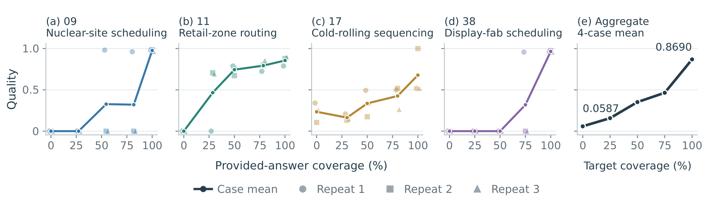

Request + business data
instruction.mddata/Original level of detail, consistently de-identified.
FM Agent Team · Baidu AI Cloud
Evaluating End-to-End Delivery from Underspecified Real-World Business Requests
Can an AI agent turn an incomplete customer request into a solution the customer would accept? We test the entire journey—uncovering requirements, building a solution, and delivering against real business standards.
Explore the benchmarkInitial brief + real business data
01 / Main evaluation
High validity does not guarantee customer-level quality. Even the strongest evaluated systems remain well below the customer-accepted FDE reference.
Highest mean QualityCodex + GPT-6-Astra · reference = 1.0
Highest delivery success rateOpenHands + Qwen3.8-Max
Cases with any reference-level runAcross all 18 evaluated systems
Interact-Req · 49 cases · 3 runs per case
Scroll to compare all metrics →
| Rank | Agent / model | Quality | DSR | pass@3 | pass³ |
|---|
Quality averages the three scores within each case, then weights all 49 cases equally. 1.0 is the customer-accepted FDE solution—an achieved project standard.
DSR is the share of runs reaching that reference. pass@3 / pass³ measure cases with at least one / all three valid runs. Validity and reference-level delivery are different outcomes.
Reported point estimates from Table 1 ↗. The highest Quality and highest DSR come from different configurations.
02 / How it works
A forward-deployed engineer uncovers the rules that make a solution useful. FDE-Bench gives agents the same starting point: an incomplete request and the customer’s data.
instruction.mddata/Original level of detail, consistently de-identified.
Ask about missing rules. Implement, execute locally, inspect outputs, and revise.
The agent submits its artifact and the interaction log is retained.
No hidden score or evaluator feedback during solving
information.mdThe simulated customer answers from the request, context and dialogue. It does not see the clarification targets.
gt.jsonFive judges assess whether questions could elicit each target; coverage requires a 3-of-5 majority.
evaluator + FDE referencePost-submission extraction preserves the agent’s decisions. Hard-constraint violations score 0; valid artifacts receive normalized quality.

03 / What the experiments reveal
Giving an agent more business information substantially improves its solution. Complete information still leaves every compared system below the FDE reference on average.
20 paired cases · 3 runs per condition
Case-macro delivery Quality
HiddenRequest + data, no customer answers
Interact-ReqRequest + data, required clarification
FullComplete business information, no interaction
Across 18 systems, Recall and Ask-F1 correlate with Quality (ρ = 0.83 / 0.88). Precision does not track delivery metrics. These observational comparisons do not establish causality.
Of 548 zero-score runs, 78.5% record constraint or feasibility violations, while 1.5% record schema errors. Well-formed files can still break business rules.
In the four-case oracle study, mean Quality rises from 0.059 → 0.352 → 0.869 at 0%, 50% and 100% answer coverage. The last quarter of answers yields half the total gain.

A real failure trace / Case 10
The agent asks whether same-city stock must be used before buying from suppliers.
passIts own validator accepts the plan, but the deliverable still purchases an item with 327 units remaining locally.
The submitted plan breaks the priority rule. The final run receives Quality 0.
Paper-reported run: OpenCode + GPT-6-Astra. This is a summary of the trace, not a verbatim transcript. Section 5.3 and appendix ↗
04 / Built from real customer work
Every case connects an initial customer request, the ensuing project discussions, and a customer-accepted FDE solution. Retained projects required more than one month of FDE work.
Inside a warehouse project
Keep each stack to one product type where possible, while avoiding unnecessary stock moves. But what exactly counts as a mixed stack?
The initial request leaves a business rule unstated.
Illustrative example adapted from Figure 1—not a recorded agent run.
Inputs are de-identified and reviewed by an FDE. The original engineer distills requirements that cannot be resolved from the visible input and could change feasibility, quality, or customer acceptance. Reviewers run the reference solution, check the evaluator, and exclude inconsistent cases.
View the construction pipeline ↗5.43clarification targets
per case on average
1.0accepted FDE reference
not a claim of global optimality
05 / The case collection
Manufacturing, logistics, energy, retail, finance, and engineering. Browse the computational objective and the constraints that determine whether an artifact is acceptable.
06 / Use FDE-Bench
The evaluation harness and 49 de-identified case packages support new agent adapters, controlled information conditions, and repeated runs.
# Discover agents and information conditions
python -m harness --list
# Preview an evaluation before running it
python -m harness \
-a opencode \
-m YOUR_PROVIDER/YOUR_MODEL \
-c Interact-Req \
-d 002_city_delivery_route_planning \
-k 1 \
--dry-runActual model runs require your configured endpoints and credentials. See the repository for installation, data download, isolation, and scoring instructions.
07 / Contribute
We welcome pull requests. Contribute a new, de-identified customer case to a future FDE-Bench release, improve an evaluator, or add an agent adapter.
Open a pull request ↗instruction.md with the original level of detailKeep credentials and private customer material out of pull requests. Start from the existing case structure and read the repository's release notes before sharing data.
Evaluation reliability & scope
Two experts independently audited stratified subsets across all 18 configurations. These checks support reliability on the audited subsets; they do not eliminate extraction-related score risk.
Experts marked 95.93% and 90.48% as supported; their support labels agreed on 92.10% of records.
93.33% and 91.00% of assessable extractions were judged faithful. The sample was enriched for runs with extraction issues.
The model panel agreed with experts on 94.74% and 93.33%, excluding uncertain labels.
Requirements and business data are fixed. The simulated customer does not revise expectations in response to intermediate solutions. The 49 optimization and ML projects do not cover every FDE setting.
Paper & team
@misc{li2026fdebench,
title = {FDE-Bench: Evaluating End-to-End Delivery from
Underspecified Real-World Business Requests},
author = {Li, Huaiming and Huang, Can and others},
year = {2026}
}